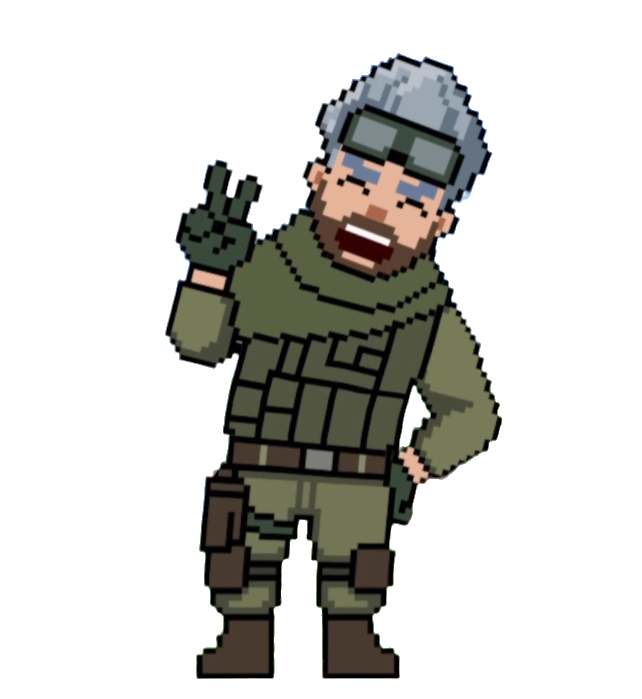

むいぴーとは？
アメリカからゲーム生配信中心に活動しているVtuber、むいぴーです🅿️✌️
みなさん、出会ってくれてありがとう！
様々なジャンルのゲームを基本初見プレイで生配信を中心に活動中！
コメントはなるべく全拾い、視聴者さん達とわいわいアットホームな楽しい雰囲気の配信を目指しています🫶
📢 配信逃さないために
チャンネル登録＆🔔通知ONお願いします！
いいねをしてくれるとモチベ上がります！
チャンネル登録＆🔔通知ONお願いします！
いいねをしてくれるとモチベ上がります！
投票箱：ゲームリクエストや素朴な質問、相談などなんでもウェルカム！
X/Twitter では #むいぴーのはいしん タグを使って配信アーカイブや告知をシェアしてくださるととても喜びます！
視聴者さんの参加をお待ちしております。
むいぴーのディスコードサーバーって何？
- 1⃣ むいぴーの配信日程や告知などの確認。
- 2⃣ 配信している各ゲームのチャンネル - むいぴーに知ってほしい攻略情報や自慢のスクショのシェア、ゲームに対する熱い思いなどなんでも待っています！
- 3⃣ 今後配信してほしいゲームリクエスト。
- 4⃣ その他の雑談など
🔥 サーバー参加の特権
今後参加型配信で一時的VCの解放、メンバーシップの交流なども予定！
今後参加型配信で一時的VCの解放、メンバーシップの交流なども予定！
誰でも参加オーケーです🥰
基本チャットだけのサーバーなので気軽に参加してください！
好きなゲームが同じ友達を探すのにも使っていただいて結構です☺️